How to use ROS_BRIDGE
Abstract
- ROS Bridge Driver Package for CARLA Simulator Package
- Code based on another package used for ROS-CARLA integration used by the CARLA repository
- The goal of this ROS package is to provide a simple ROS bridge for CARLA simulator in order to be used for the ATLASCAR project of Aveiro University.
- This documentation is for CARLA versions newer than 0.9.4
Image Results:
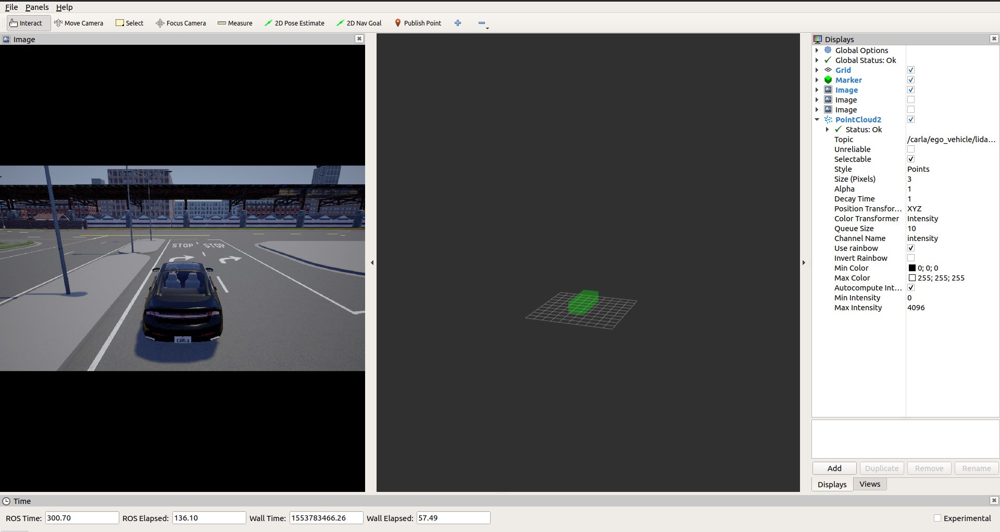
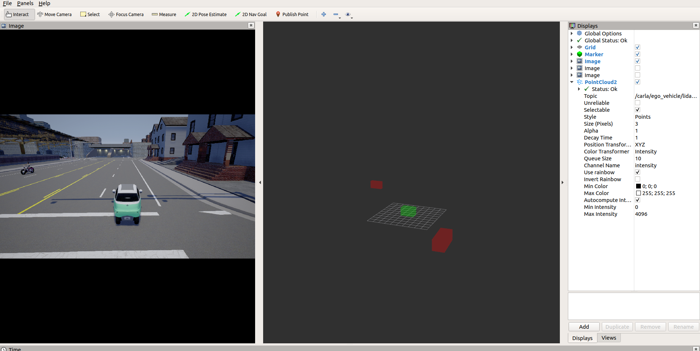
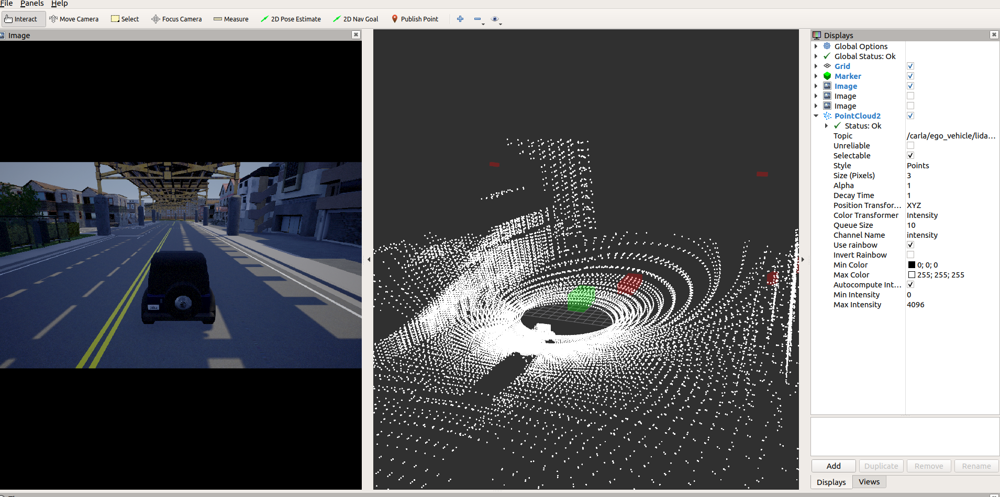
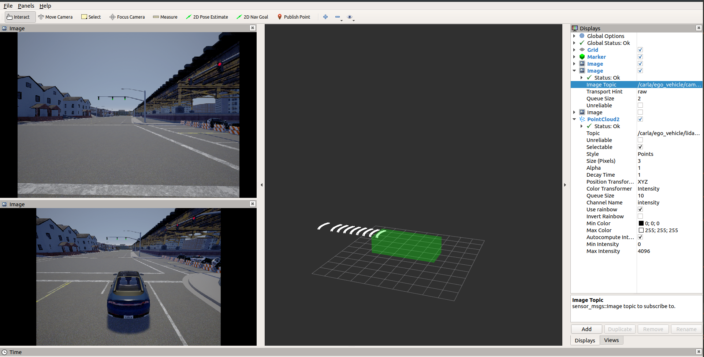
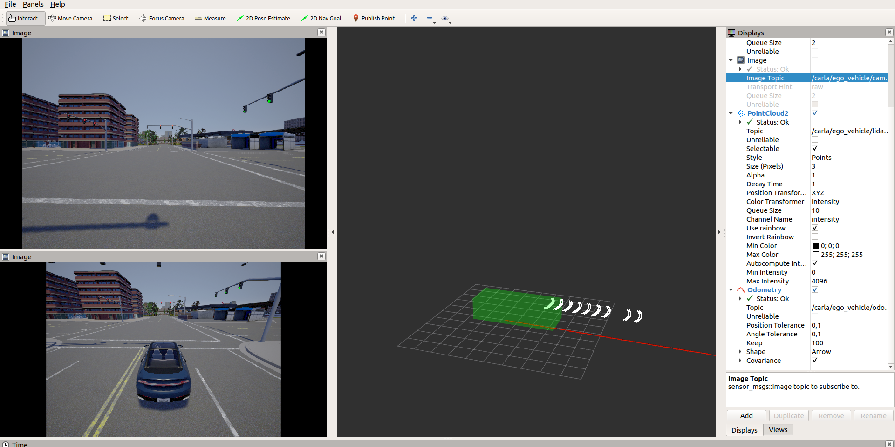
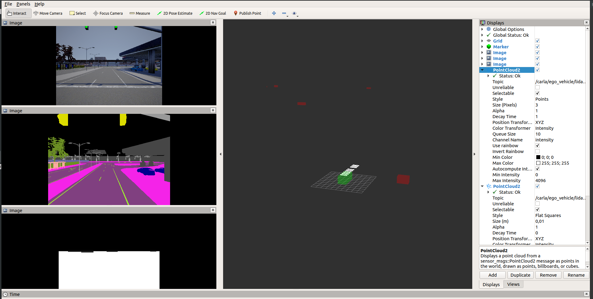
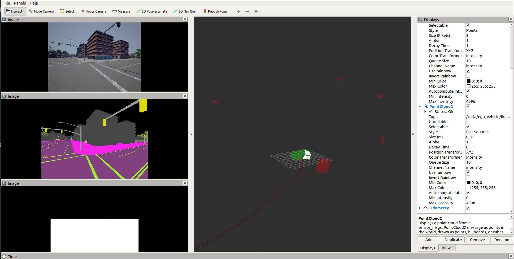
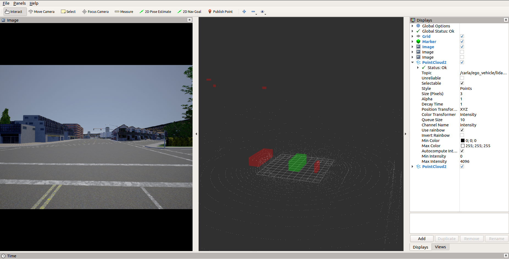
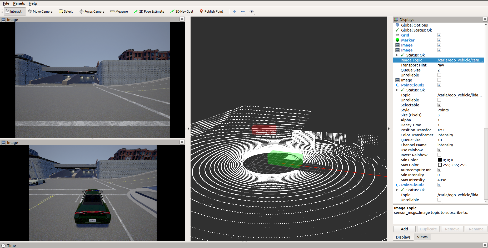
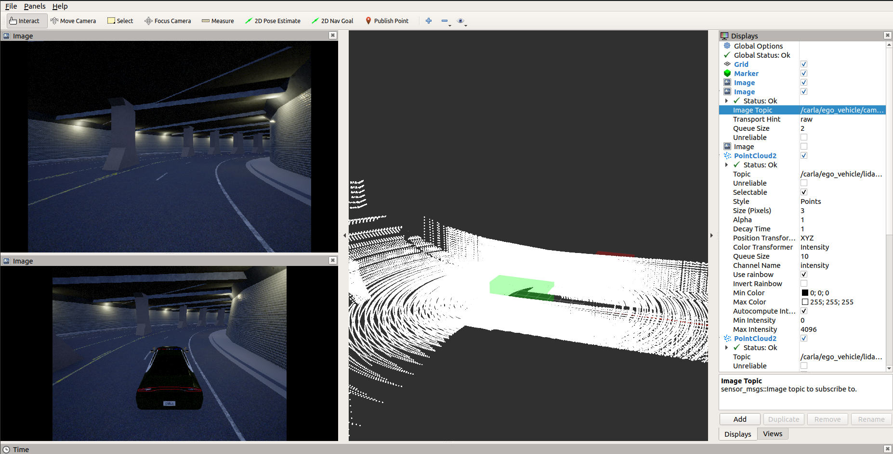
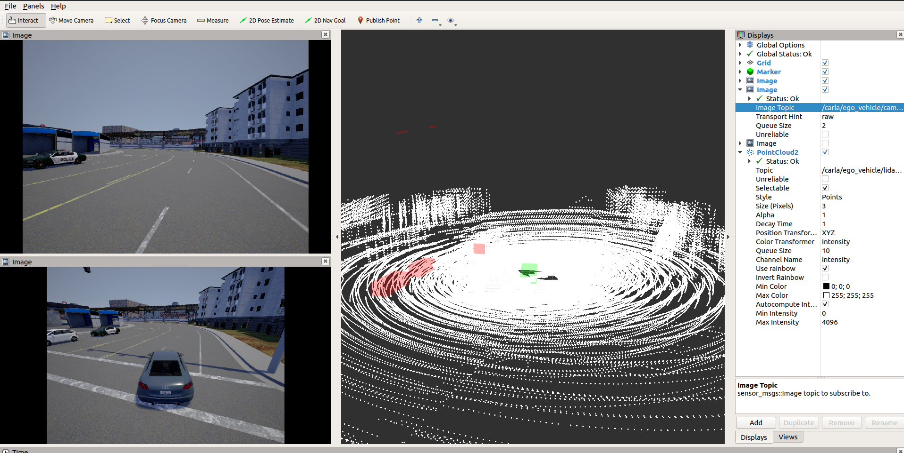
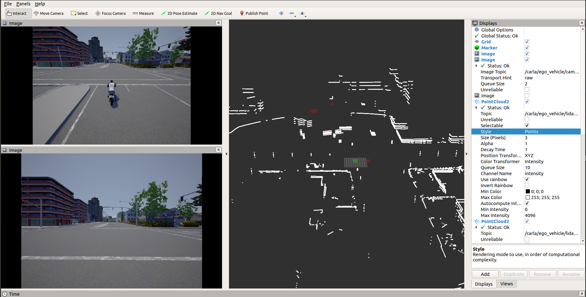
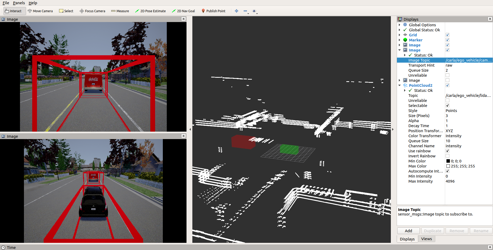
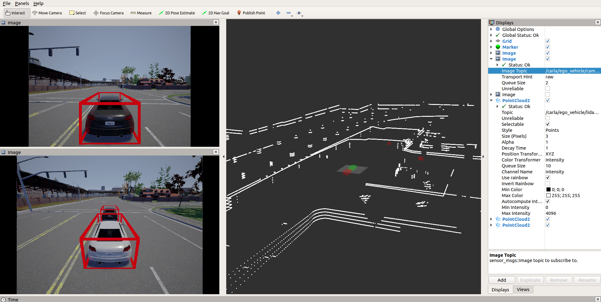
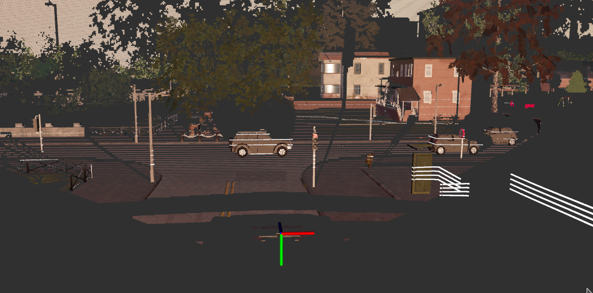
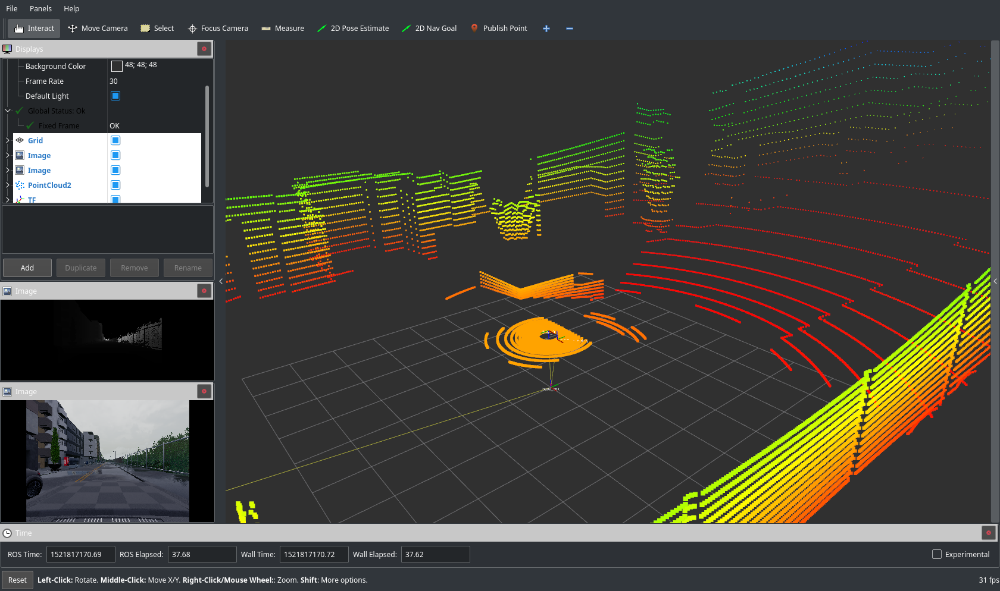
Features
- Cameras(Depth, Segmentation, RGB) Support.
- Transform Publications.
- Manual Control Using Ackermann ROS Message.
- Handle ROS Dependencies.
- Marker/Bounding Box Messages For Cars/Pedestrians.
- LIDAR Sensor Support.
- ROSBAG In The Bridge(in order to avoid rosbag record -a small time errors).
- Add Traffic Light Support.
- ROS/OpenCV Image Convertion and Object Tracking using Template Matching.
Setup
On this section it is explained the setup process in order to use the carla_ros_bridge package.
Create a catkin workspace and install carla_ros_bridge package:
First, clone or download the carla_ros_bridge, for example into
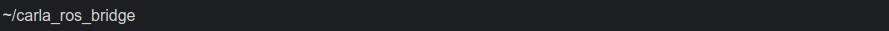
Create the catkin workspace:
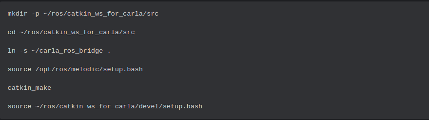
For more information about configuring a ROS environment see ROSWiki
Install the CARLA Python API
In order to use CARLA Pytho Client API you need to set this line into your .bashrc file
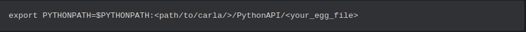
Please note that you have to put in the complete path to the egg-file including the egg-file itself.
Please use the one, that is supported by your Python version.
Depending on the type of CARLA (pre-build, or build from source), the egg files are typically located either directly in the PythonAPI folder or in PythonAPI/dist.
Check if the installation is successfull by trying to import carla from Python using the following command.
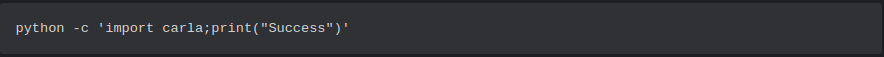
You should see a "Success" message appear without any errors.
Start the ROS Bridge Package
First run the CARLA simulator (see CARLA documentation).
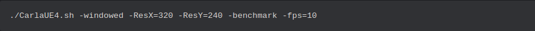
Wait for this message.
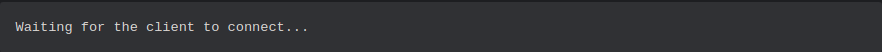
Start ROS bridge via this command.
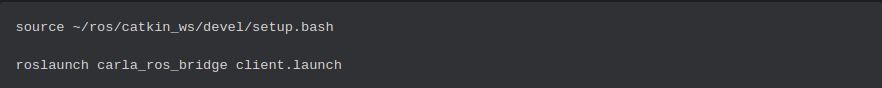
Start ROS bridge with rviz via this command.
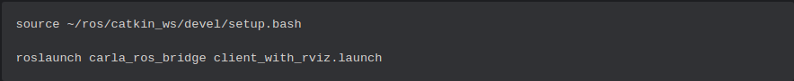
You can setup the ROS Bridge configuration via the settings.yaml file.
As we have not spawned any vehicle and have not added any sensors in our carla world there would not be any stream of data yet.
You can make use of the CARLA Python API script manual_control.py.
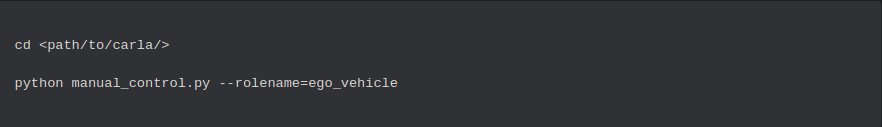
This spawns a carla client with role_name='ego_vehicle'.If the rolename is within the list specified by ROS parameter /carla/ego_vehicle/rolename, the client is interpreted as an controllable ego vehicle and all relevant ROS topics are created.
To simulate traffic, you can spawn automatically moving vehicles by using spawn_npc.py from CARLA Python API.
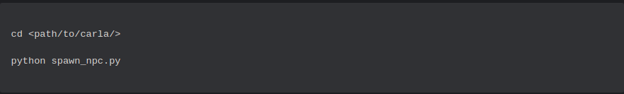
Available ROS Topics
Carla ROS Vehicle Setup
This package provides two ROS nodes:
- Carla Example ROS Vehicle: A reference client used for spawning a vehicle using ROS.
- Carla ROS Manual Control: a ROS-only manual control package.
Carla Example ROS Vehicle
The reference Carla client carla_example_ros_vehicle can be used to spawn a vehicle (ex: role-name: "ego_vehicle") with the following sensors attached to it:
- GNSS
- 3 LIDAR Sensors (front + right + left)
- Cameras (one front-camera + one camera for visualization in carla_ros_manual_control)
- Collision Sensor
- Lane Invasion Sensor
Info: To be able to use carla_ros_manual_control a camera with role-name 'view' is required.
If no specific position is set, the ego vehicle is spawned at a random position.
Spawning a vehicle at a specific position
It is possible to (re)spwan the example vehicle at a specific location by publishing it to the /initialpose topic.
The preferred way of doing that is using RVIZ:

Selecting a pose with "2D Pose Estimate" will delete the current example vehicle and respawn it at the specified position.
Create your own sensor setup
To setup your own example vehicle with sensors, follow a similar approach as in carla_example_ros_vehicle by subclassing from CarlaRosVehicleBase.
Define sensors with their attributes as described in the CARLA documentation about Cameras and Sensors.
The format is a list of dictionaries. One dictionary has the values as follows:
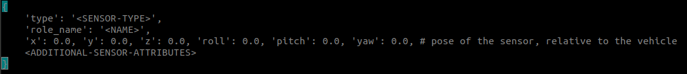
Carla ROS Manual Control
The node carla_ros_manual_control is a ROS-only version of the Carla manual_control.py. All data is received via ROS topics.
Notes:
- To be able to use carla_ros_manual_control a camera with role-name 'view' needs to be spawned by a carla_ros_vehicle.
Manual Steering
In order to steer manually, you might need to disable sending vehicle control commands within another ROS node.
Therefore the manual control is able to publish to the /vehicle_control_manual_override topic (std_msgs.Bool).
Press B to toggle the value.
Notes:
- As sending the vehicle control commands is higly dependent on your setup, you need to implement the subscriber to that topic yourself.
Odometry
- | Topic | Type |
- |-------------------------------|------|
- | /carla/
/odometry | nav_msgs.Odometry |
Sensors
The ego vehicle sensors are provided via topics with prefix /carla/ego_vehicle/
Currently the following sensors are suported:
Camera
- | Topic | Type |
- |-------------------------------|------|
- | /carla/
/camera/rgb/ /image_color | sensor_msgs.Image | - | /carla/
/camera/rgb/ /camera_info | sensor_msgs.CameraInfo |
Camera RGB
Camera Depth(Raw)
Camera Depth(Gray Scale)
Camera Depth(Logarithmic Gray Scale)
Camera Semantic Segmentation (Raw)
Camera Semantic Segmentation (CityScapes Palette)
LIDAR
- | Topic | Type |
- |-------------------------------|------|
- | /carla/
/lidar/ /point_cloud | sensor_msgs.PointCloud2 |
Lidar (Ray-Cast)
GNSS
- | Topic | Type |
- |-------------------------------|------|
- | /carla/
/gnss/front/gnss | sensor_msgs.NavSatFix |
Collision
- | Topic | Type |
- |-------------------------------|------|
- | /carla/
/collision | carla_ros_bridge.CarlaCollisionEvent |
Control
- | Topic | Type |
- |-------------------------------|------|
- | /carla/
/vehicle_control_cmd (subscriber) | carla_ros_bridge.CarlaEgoVehicleControl | - | /carla/
/vehicle_status | carla_ros_bridge.CarlaEgoVehicleStatus | - | /carla/
/vehicle_info | carla_ros_bridge.CarlaEgoVehicleInfo |
You can stear the ROS vehicle from the commandline by publishing to the topic /carla/
Examples for a ROS vehicle with role_name 'ego_vehicle':
- Max Forward Throttle: 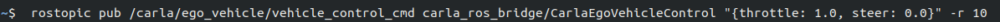
- Max Forward Throttle with Max Steering to the right:
The current status of the vehicle can be received via the topic: /carla/
Static information about the vehicle can be received via /carla/
Carla Ackermann Control
In certain cases, the carla_ros_bridge.CarlaEgoVehicleInfo
Therefore a ROS-based node carla_ackermann_control is provided which reads AckermannDrive messages.
- A PID controller is used to control the acceleration/velocity.
- Reads the Vehicle Info, required for controlling from CARLA (via carla_ros_bridge_msgs package).
Prerequisites
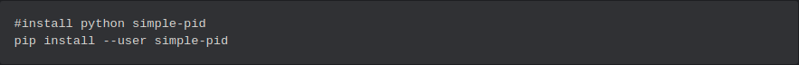
Configuration
The initial parameters can be set via the settings.yaml file.
It is possible to modify the parameters during the simulation runtime via ROS dynamic reconfigure package.
Available Topics
- | Topic | Type | Description
- |-------------------------------|------|
- | /carla/
/ackermann_cmd (subscriber) | ackermann_msgs.AckermannDrive | Subscriber for steering commands | - | /carla/
/ackermann_control/control_info | carla_ackermann_control.EgoVehicleControlInfo | The current values used within the controller (for deubgging) |
The role name is specified with the configuration.
Test Control Messages
You can send command to the vehicle using the topic /carla/
Examples for a ROS vehicle with role_name 'ego_vehicle':
- Forward movements, speed in meters/src: 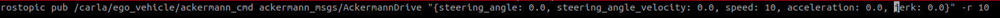
- Forward with steering: 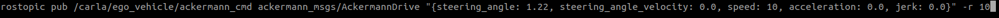
Info:
- the steering_angle is the driving angle (in radians) not the wheel angle.
Other Topics
Object Information of Other Vehicles
- | Topic | Type |
- |-------------------------------|------|
- | /carla/objects | derived_object_msgs.String |
Object information of all vehicles, except the ego-vehicle(s) that have been published
Map
- | Topic | Type |
- |-------------------------------|------|
- | /carla/map | std_msgs.String |
The OPEN Drive map description is published
ROSBAG Recording(Not Yet Tested)
The carla_ros_bridge could also be used to record all published topics into a rosbag by using the following comand:
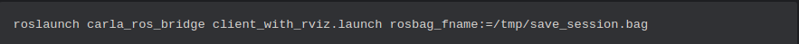
This command will create a rosbag /tmp/save_session.bag
You can of course also use rosbag record to do the same, but using the ros_bridge to do the recording you have the guarentee that all the message are saved without small desynchronization that could occurs when using rosbag record in an other process.
Carla-ROS Bridge Messages
The node carla_ros_bridge_msgs is a ROS Node used to store the ROS messages used in the ROS-CARLA Integration
Message Files
These are the ROS message file that have been used so far:
- CarlaCollisionEvent.msg
- CarlaEgoVehicleControl.msg
- CarlaEgoVehicleInfo.msg
- CarlaEgoVehicleInfoWheel.msg
- CarlaEgoVehicleStatus.msg
- CarlaLaneInvasionEvent.msg
Carla-ROS Waypoint Publisher
The CARLA supports waypoint calculations. The node carla_waypoint_publisher makes this feature available in the ROS context.
It uses the current pose of the ego vehicle with role-name "ego_vehicle" as the starting point. If the vehicle is respawned, the route is newly calculated.
Startup
As the waypoint publisher requires some CARLA PythonAPI functionality that is not part of the python egg-file, you have to extend your PYTHONPATH
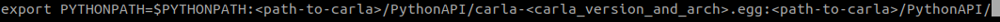
To run it:
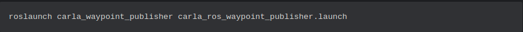
Set a goal
The goal is either read from the ROS topic /move_base_simple/goal, if available, or a fixed spawnpoint is used.
The prefered way of setting a goal is to click "2D Nav Goal" option in RVIZ
Published Waypoints
The calculated route is published:
- | Topic | Type |
- |-------------------------------|------|
- | /carla/ego_vehicle/waypoints | nav_msgs.Path |
ROS-OpenCV Image Convertion
The carla_ros_image_converter package is used to convert images from a ROS Topic to an OpenCV images by running the following command:
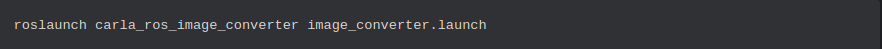
Carla ROS Bounding Boxes
The carla_ros_image_converter package can be used to draw the bounding boxes around the objects present in the CARLA world according to ther location/rotation and convert the results into an OpenCV image.
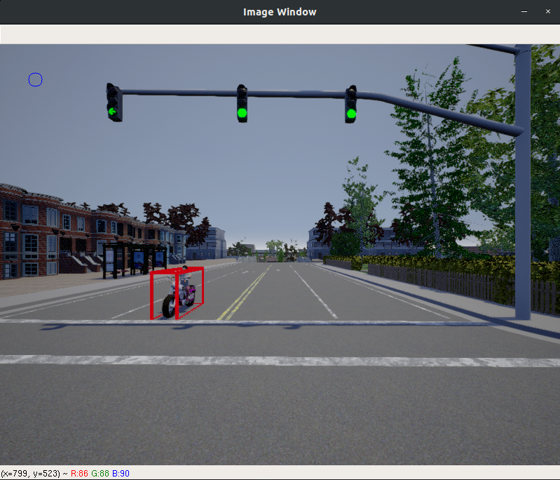
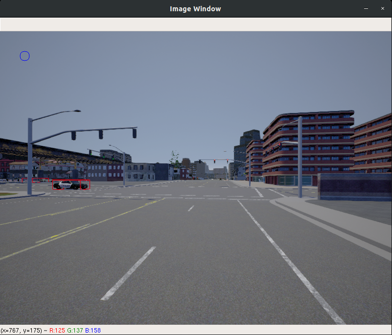
Carla ROS Datasets
The position, location, orientation, rotation of these objects as well as a label for these objects can be recorded via a json file data.json.
The json format can be defined like this:
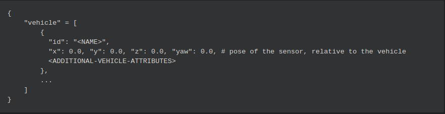
Troubleshooting
ImportError: No module named carla.
You're missing Carla Python. Please execute:
Please note that you have to put in the complete path to the egg-file including the egg-file itself. Please use the one, that is supported by your Python version. Depending on the type of CARLA (pre-build, or build from source), the egg files are typically located either directly in the PythonAPI folder or in PythonAPI/dist.
Check if the installation is successfull by trying to import carla module from python:
You should see a Success message without any errors.